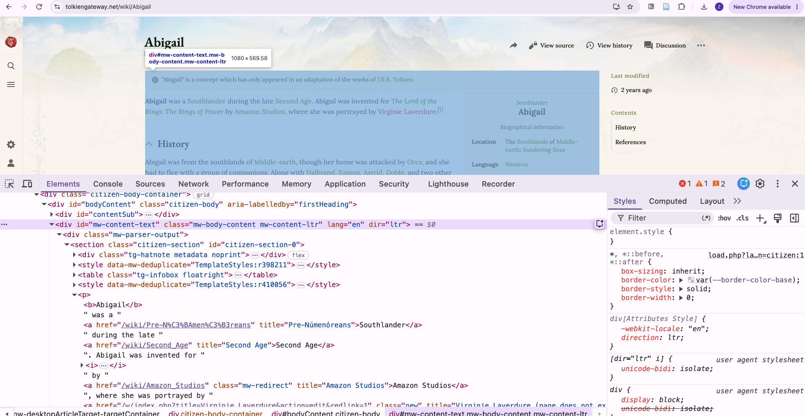
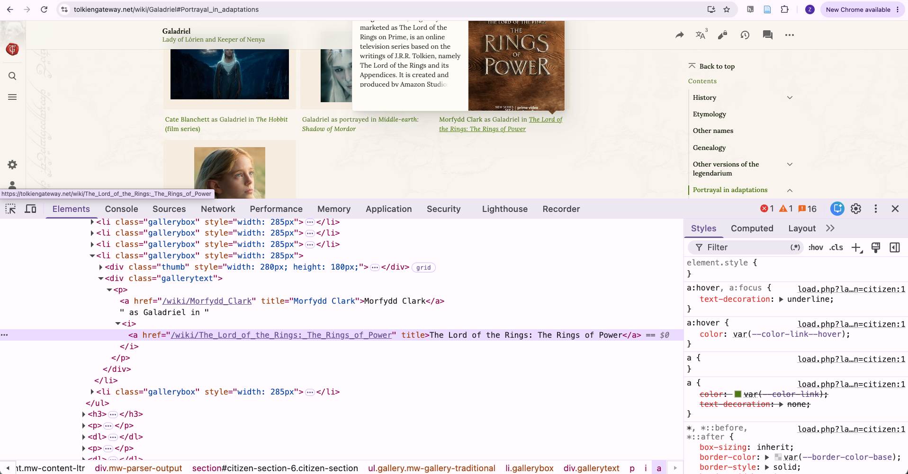
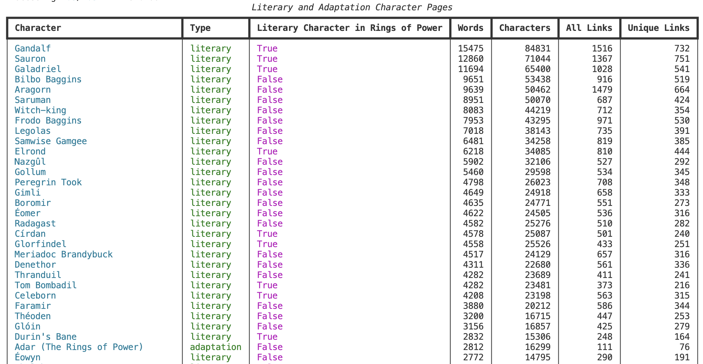
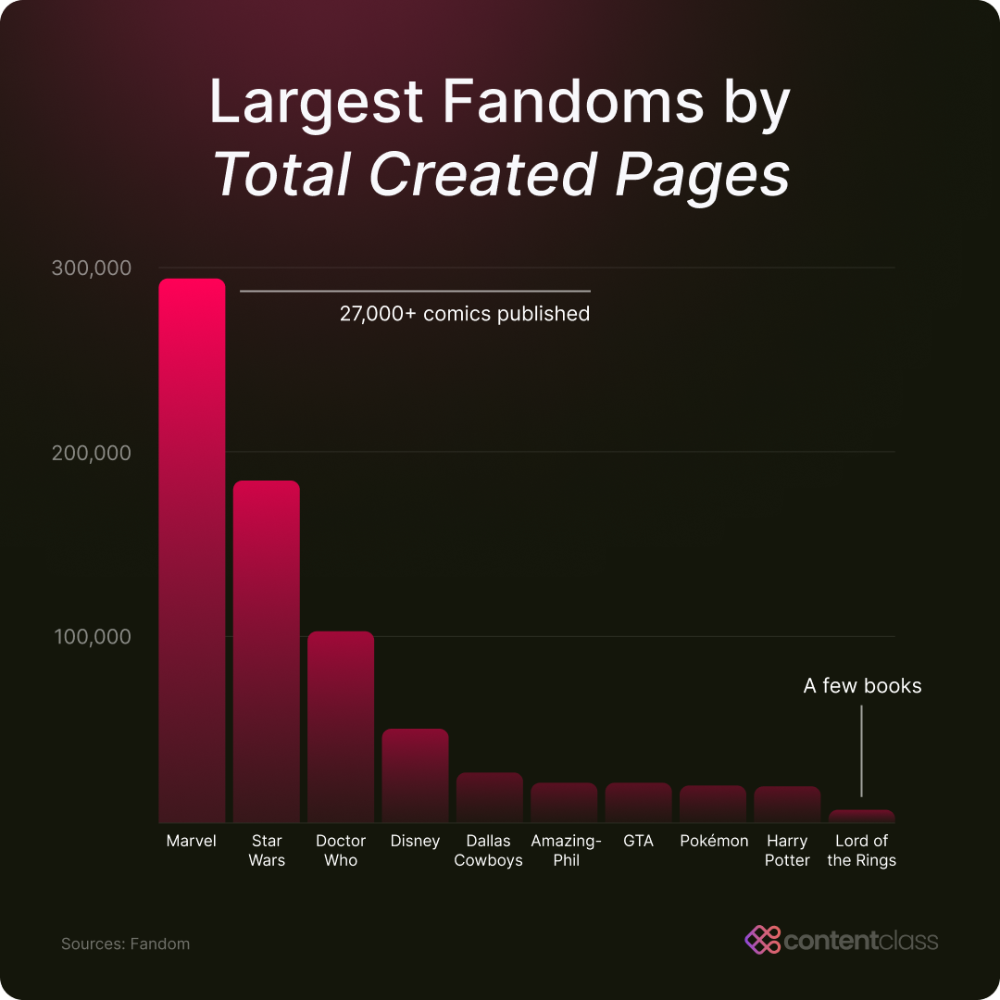
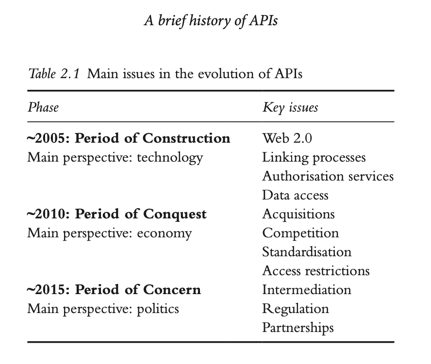
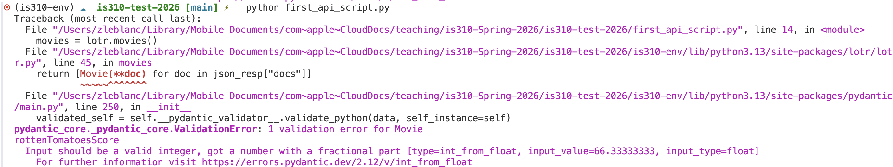

GETting Cultural Data From APIs
Limits & Interfaces
Today’s Agenda
- Review remainder of scraping lesson
- Review APIs’ lesson
- Review the homework
Web Scraping Review
Any questions before we jump in?
What Changes When We Look At More Complex Sites? How does a Wiki differ from Project Gutenberg?
Where Did Wikis Come From?

What changes when readers can also edit the webpage?
How Did Wikipedia Change the Scale of Wikis?

How Did Wikis Become Cultural Infrastructures?
What kinds of cultural knowledge do fan communities organize differently?
How Do We Know if We Can Access a Site?
What should we do when a site returns 403, 429, or a bot-protection page?
What are request headers?
Why do we capitalize the headers variable? Why identify ourselves and deliberately make the script slower?
What Questions Could We Ask?
How does the website structure what we can count?
What has the wiki already decided for us?
How Might We Find Every Character?
What Part of a Character Page Should Count?

What would happen if we counted the entire webpage?
What Might Count as Attention?
| Measurement | Possible interpretation |
|---|---|
| Words | Length of documentation |
| Characters | Another measure of text extent |
| All internal links | Every connection made in the article |
| Unique internal links | Breadth of distinct wiki destinations |
Which of these is fandom attention, and which is only a proxy? Why is attention culturally interesting?
Why Count All and Unique Links?
All links: 5
Unique links: 2
What different kind of page might each measure reward?
Who Appears in Both Worlds?

What can a link to the television series tell us about a literary character?
Why Break the Scraper Into Functions?
What single responsibility does each function have?
What Does main() Make Visible?
What Do You Notice in the Results?

Which pattern would you investigate first? What would you verify before making a claim?
Next Homework Assignment: Community Wikis & Web Scraping

Next Homework Assignment: Community Wikis & Web Scraping
GitHub Discussion to post link to folder
- A question and justified choice of community wiki
- A documented
robots.txtand access check - A scraper using
requestsandBeautifulSoup - An honest
User-Agent, response check, and delay - At least two levels or types of pages
- A CSV or JSON dataset
- A reflection on the gap between your metric and your concept
Cultural APIs & GETting Data
What is an API?

API Workflow
What is a database?
How do tabulating machines, spreadsheets, databases, and APIs connect?
Where do web APIs come from?
Why are we in the Post-API Age? What has happened to APIs since 2010?


Where is the Web going? What is decentralized web infrastructure?

Anyone Use Bluesky or Mastodon?
What changes when we use an API? Why might we use an API over scraping?

What happens if we try to scrape LOTR Fandom?
What is the MediaWiki API?

Where is the Action API?
What are endpoints and parameters?

Anatomy of URL parameters
What does action=query mean?
How do we query a category?
Extending the Scraping Question
What counts as editorial attention?
| Metric | What we count |
|---|---|
| Words and characters | Visible article text |
| All and unique links | Connections within the wiki |
| Language links | Corresponding pages reported by MediaWiki |
What does action=parse return?

Why is HTML inside JSON?
How do we count links?
What do the pages show?
| Character | Words | All Links | Unique Links | Language Links |
|---|---|---|---|---|
| Galadriel | 13,931 | 767 | 403 | 11 |
| Arondir | 1,788 | 103 | 63 | 8 |
| Halbrand | 11 | 0 | 0 | 0 |
| Disa | 531 | 50 | 25 | 8 |
Why does Halbrand become an outlier?
| Wiki | Page type | Words | All Links | Unique Links |
|---|---|---|---|---|
| Tolkien Gateway | Full article | 1,410 | 79 | 65 |
| One Wiki | Redirect to Sauron | 11 | 0 | 0 |
What if both sites use full articles?
| Wiki | Words | All Links | Unique Links |
|---|---|---|---|
| Tolkien Gateway | 11,694 | 1,028 | 541 |
| One Wiki | 13,931 | 767 | 403 |
Galadriel, checked October 2026
Authentication and The One API
How do we request public book data?
What do we see and what is it?
Can we get all the data? What happens if we try to get characters?
How Can We Get an API Key?
How should we store API keys? What is the danger of committing credentials?
How do parameters filter the data?
How do identifiers connect records? Why do we need to use time.sleep()?
API Wrappers

nrh-lotr: A small third-party wrapper
What does a wrapper change?
What happens when the wrapper is wrong?

Pydantic validation error
What does the wrapper omit?
How does the Internet Archive organize culture?

Search result, item, or file?
Search result
Compact match
Item
Metadata and materials
File
One representation
How do we inspect one item?
What does each interface make central?
| System | Central objects | Access model |
|---|---|---|
| MediaWiki | Pages, categories, language links | Public Action API |
| The One API | Books, characters, movies, quotes | Public and authenticated endpoints |
nrh-lotr |
Selected Python models | Third-party wrapper |
| Internet Archive | Items, files, collections | Maintained library and APIs |
GETting Culture Across APIs Homework
- One MediaWiki Action API
- One second API that interests you
- One item connected across both
What must the script do?
- Query and print both API responses
- Connect a specific item across the APIs
- Save item data as JSON or CSV
- Check status codes and handle failed lookups
- Keep credentials out of GitHub
What belongs in the README?
- What access did each API require?
- What do its limits imply about expected use?
- How did each structure cultural data?
- Who maintains and funds it?
- What or whom does it leave out?
Submit the Homework
- Link to the
api-getting-datafolder - Name the second API
- Explain why you chose it